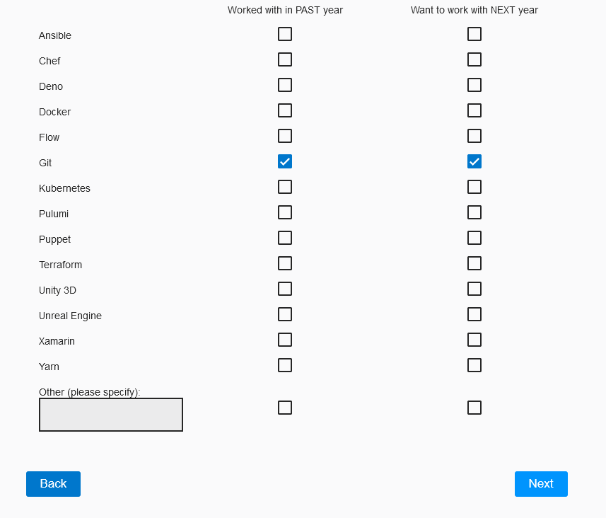
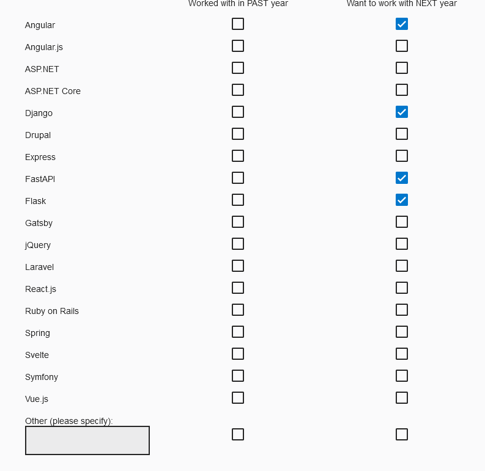
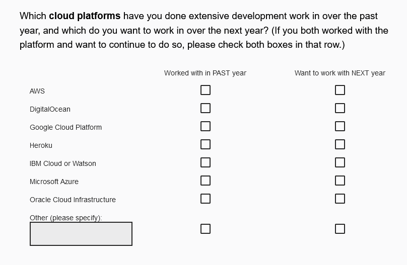
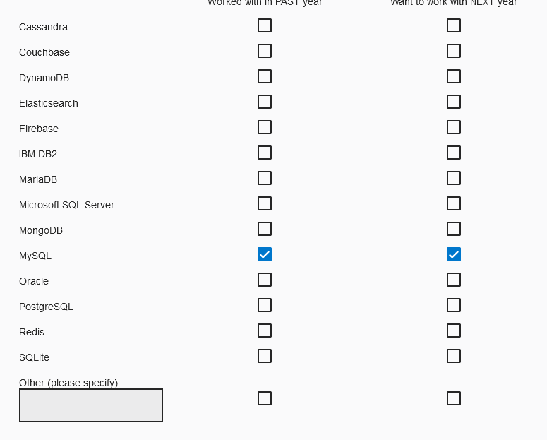

General
IDE :
VisualStudio :
How to format code in visual studio
To format a selection : Ctrl+K - Ctrl+F
To format a document: Ctrl+K - Ctrl+D
Conventions :
Scannable notes in code :
TODO BUG XXX FIXME OPTIMIZE HACK
Model program structure :
- Agent Interaction Diagram : a way to represent model diagram of agents interactions with a user.
- UML (Universal Modeling Language) : Object oriented way to represent classes and their interactions - Easy to use with Java
File formats :
bin files advantages
The good point of these files is that writing/reading is fast with numpy arrays or memmap()
Fastest to slowest [ref]:
- bin files (use with struct and an architecture descriptor)
- feather / parquet
- pickle
pandas optimisation with pandas.Categorical
There is a very high factor ratio for read / write times between string and pandas.Categorical based categorical indexing. Consider use that type of structure when using a DataFrame.
HDF file viewer
An official software called HDF View allows to inspect HDF files. It can be downloaded here.
-
HDF view (e.g. PyTables)
-
CSV
Readable by human :
- config text files (e.g. ini)
- yaml or yml files
3D space computations :
Graphical 3D space mathematical programming courses & tutorials : Scratchpixel 2.0
Geometry homepage - Geometry 3D calculations
Machine Learning :
Convolution artificialNN guide
Deep learning eebook by matlab
Opening deeplearning black box : interpretability deep learning
Deep Learning : particularly good for solving Complex Systems where very well studied filds interacts with each other (proteomics, cellular biology, fluidics and immunology, for the adaptative imune system , many fields for neurosciences and consciousness, behavioral studies for bridges ! cf Veritasium video on Millenium bridge in London)
With interpretable deep learning : could open a new way in neurosciences.
Using Deep Learning to Predict Complex Systems: A Case Study in Wind Farm Generation
Recurrent Neuronal Networks :
Languages / Frameworks existing :
Tools

WEB frameworks

Cloud platforms

Databases

is computer program code that requires and will execute only under the management of a Common Language Infrastructure (CLI) or other types of virtual machines.Le terme de managed code provenant de Microsoft ne fait pas partie de la terminologie Java, mais le même concept existe : du code exécuté dans la JVM bénéficie de plusieurs avantages du code managé, dont notamment le ramasse-miettes.
In computer science, garbage collection (GC) is a form of automatic memory management. The garbage collector attempts to reclaim memory which was allocated by the program, but is no longer referenced—also called garbage There is several strategies for automatic garbage detection.